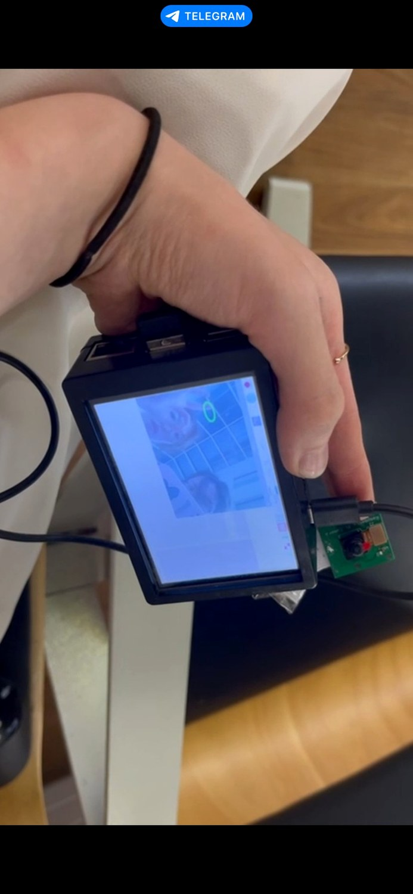

PROJECT 02 · COMPUTER VISION / ACCESSIBILITY
Sign Language Translator
I built a Raspberry Pi prototype that recognizes fingerspelled letters and converts them to text. I started by researching communication barriers faced by deaf and hard-of-hearing people.
1ST PLACE · NATIONALWORKING PROTOTYPE2022

RASPBERRY PI PROTOTYPE · 9 × 6 × 3 CM
00
LIVE DEMO
The system recognizing letters in real time.
Demo of the current version recognizing Korean fingerspelling. The 2022 competition prototype used the Russian alphabet; that recording was not saved.
KOREAN FINGERSPELLING · CURRENT BUILD
01
USER RESEARCH
I interviewed potential users before defining the system.
I researched barriers in communication, education, public services, interpretation, employment, and social participation. I completed five interviews: three with people who have hearing loss, one with a family member, and one with a Deaf Academy representative.
I used 18 questions to ask about daily life, communication methods, barriers, interpretation services, possible use cases, feedback on the prototype, and requested features.
02
SYSTEM
01CameraCapture hand pose
→02MediaPipe21 hand landmarks
→03GeometryPosition + distance rules
→04CharacterFingerspelled letter output
→05DeviceText / future speech
Landmark-based letter recognition
Python and OpenCV process camera frames. MediaPipe provides finger landmarks. Each recognized letter is defined through relative positions (above, below, left, right) and Euclidean distances between selected points. The letter rules were later redefined for Korean fingerspelling, so the same geometric approach transfers to a different alphabet.
Raspberry Pi prototype
I assembled the prototype with a Raspberry Pi, camera, touchscreen, and speaker. The report records a size of approximately 9 × 6 × 3 cm and a weight of about 170–200 g.
03
IMPLEMENTATION LIMITS
Static fingerspelled letters.
The prototype recognizes static alphabet signs by evaluating landmark positions and distances in each frame.
Dynamic signs require a different method.
Recognizing signs that include movement would require temporal pose analysis and a trained dataset instead of only fixed geometric thresholds.
An additional communication tool.
I designed the system as an additional communication tool for settings such as schools, public institutions, healthcare, examinations, and employment. It is not intended to replace professional interpreters.
Add speech-to-sign output.
Interview feedback suggested adding speech-to-sign output, allowing users to choose between text and visual signs, and improving recognition accuracy.

AWARD
1st Place in the national prototype category.
I received 1st Place in the Prototype category at KazRoboProject 2022, a national scientific and technical robotics competition for participants aged 16–21.
I also completed IBM’s Introduction to Computer Vision and Image Processing course in 2022.
04
FULL REPORT
PROJECT REPORT · 25 PAGES · RUSSIANПереводчик с языка жестов / Sign Language Translator
⌄
Переводчик с языка жестов / Sign Language Translator
Problem research, interview methodology, use cases, device construction, MediaPipe and OpenCV implementation, code, limitations, future features, and partnerships.
Open PDF ↗